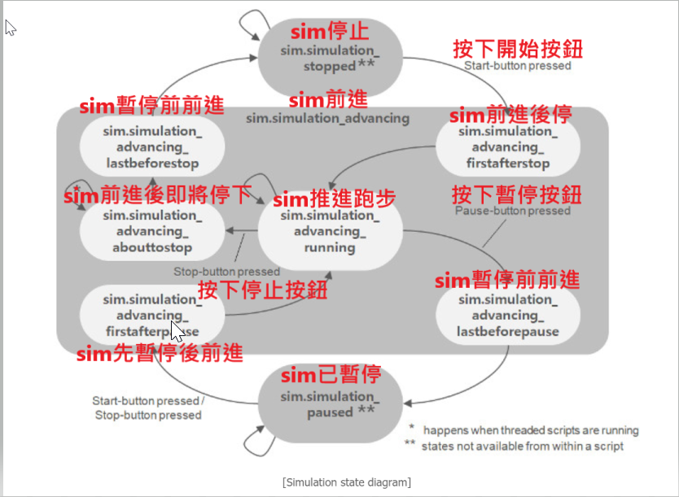

編寫代碼 <<
Previous Next >> Tutorials
模擬
Created by 40723144廖豪樹
A simulation in CoppeliaSim can be started, paused and stopped with [Menu bar --> Simulation --> Start/Pause/Stop simulation] or through the related toolbar buttons:
可以使用[菜單欄->模擬->開始/暫停/停止模擬]或通過相關的工具欄按鈕來啟動，暫停和停止CoppeliaSim中的模擬：
Internally(在內部), the simulator(模擬器) will use additional(額外) intermediate(中間) states in order to correctly(正確地) inform scripts(告知腳本) or programs about what will happen next. Following state diagram(狀態圖) illustrates(說明) the simulator's internal(內部) states:
在內部，模擬器將使用其他中間狀態，以正確告知腳本或程序接下來將發生的情況。 以下狀態圖說明了模擬器的內部狀態：

Scripts and programs should alwaysreact(總是反應) according to the current system call function and possibly the simulation state in order to behave correctly(正確運行). It is good practice to divide each(劃分每個) control code into at least(至少) 4 system call functions (e.g. for non-threaded(非線性) child scripts):
腳本和程序應始終根據當前系統調用功能以及可能的模擬狀態進行反應，以便正確運行。 優良作法是將每個控制代碼至少分為4個系統調用函數（例如，用於非線程子腳本）：
- Initialization(初始化) function: sysCall_init: the function is called only when the script is initialized(初始化).
初始化函數：sysCall_init：僅在腳本初始化時才調用該函數。
- Actuation(激活) function: sysCall_actuation: the function is called when actuation should happen.
激活函數：sysCall_actuation：應在發生激活時調用該函數。
- Sensing(感測) function: sysCall_sensing: this function is called when sensing should happen.
感測功能：sysCall_sensing：應在感測發生時調用此函數。
- Clean-up(清理) function: sysCall_cleanup: the function is called just before the script is de-initialized(未初始化) (e.g. at simulation end, or when the script is destroyed(銷毀)).
清理函數：sysCall_cleanup：該函數在腳本未初始化之前被調用（例如在模擬結 束時或腳本被銷毀時）。
編寫代碼 <<
Previous Next >> Tutorials